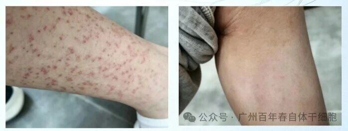
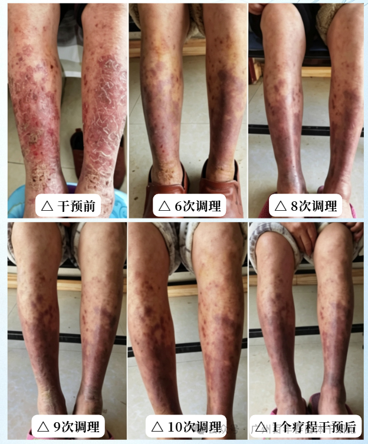

慢性荨麻疹反复难愈？百年春通过免疫根源调理改善
2026-07-21

About Us
关于百年春
慢性荨麻疹风团红斑反反复复、越抓越重？百年春免疫提升针从免疫根源改善反复瘙痒、降低复发频率。

通过1疗程免疫提升针联合对症用药调理后，破溃创面逐步愈合修复，红斑颜色明显变淡，顽固瘙痒大幅缓解；现阶段正在进行第2疗程巩固调理。

区别于传统对症止痒的方式，该方案以内源调节免疫基底为核心，作用分为四层：
1. 平衡紊乱免疫通路
双向调节Th1/Th2细胞比例，抑制过度活跃的过敏反应，减少组胺等致痒炎症介质释放，从源头降低风团、红斑突发概率，缓解剧烈瘙痒。
2. 强化免疫自控能力，改善高敏体质
提升调节性T细胞与免疫监视功能，降低机体对外界刺激的过敏阈值，减少换季、冷热、饮食、压力等诱发发作的频率，拉长复发间隔。
3. 消退陈旧皮损，修复皮肤屏障
改善局部微循环，加速肥厚结痂、红斑丘疹消退，淡化长期发作留下的色素沉着，修复受损表皮，打破“瘙痒抓挠反复加重”的闭环，对应案例中从大面积严重皮损逐步恢复光滑肌肤的变化。
4. 减少药物依赖，做周期性长期调理
不只是压制单次症状，而是循序渐进调整全身免疫状态，适合长期口服药效果有限、停药复发、形成药物依赖的慢性荨麻疹人群，按疗程干预稳定改善复发情况。
想要摆脱慢性荨麻疹反复纠缠，只控制皮肤表面远远不够，找准免疫失衡的根源才是关键。
常规手段重在“压症状”，百年春内源性免疫提升针聚焦“调根本”，依托真实前后调理案例，一步步改善风团频发、夜间瘙痒、皮肤色沉肥厚等困扰，帮大家慢慢降低过敏发作频率，回归安稳舒适的生活。
若你长期被慢性荨麻疹困扰，可到百年春健康管理中心预约专业免疫评估，定制专属周期性调理方案。

扫码添加，免费定制专属免疫调理方案！